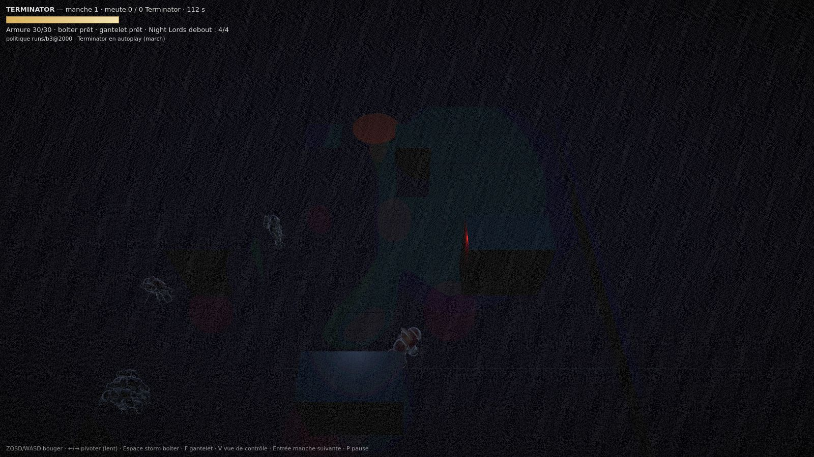
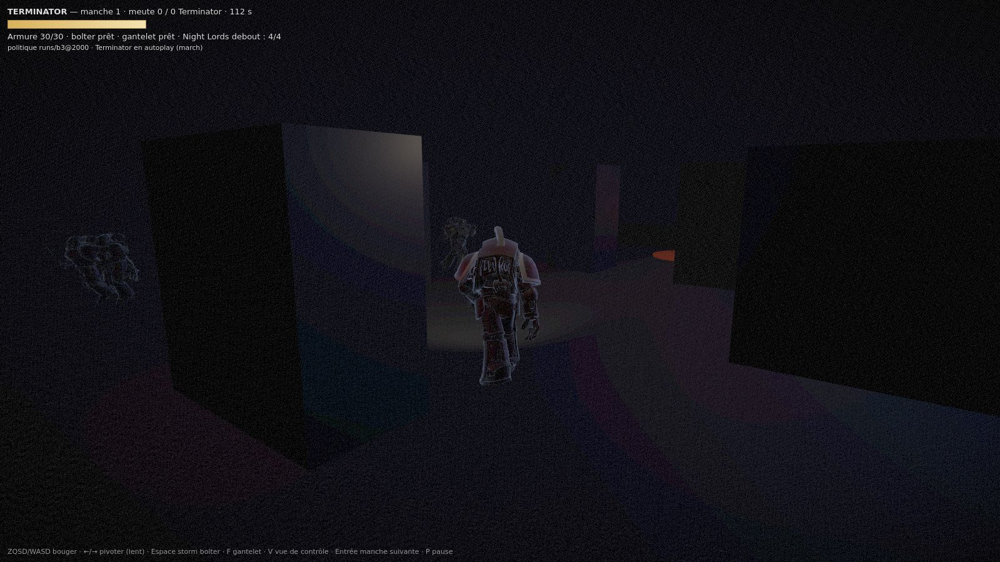
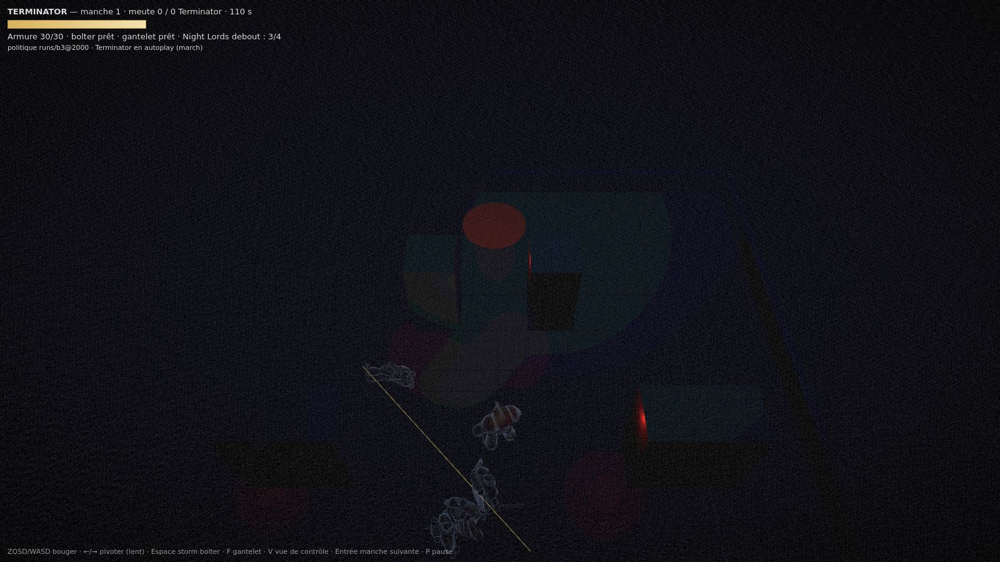
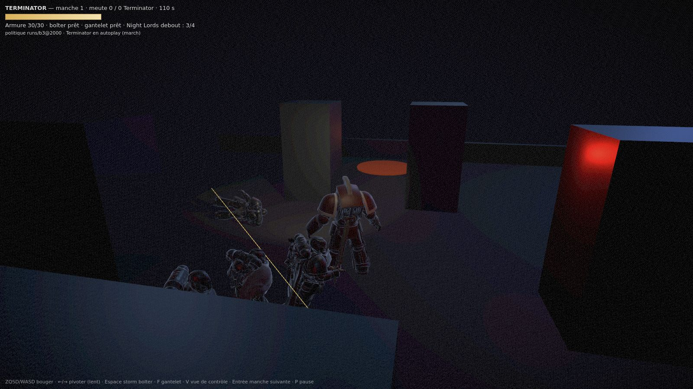
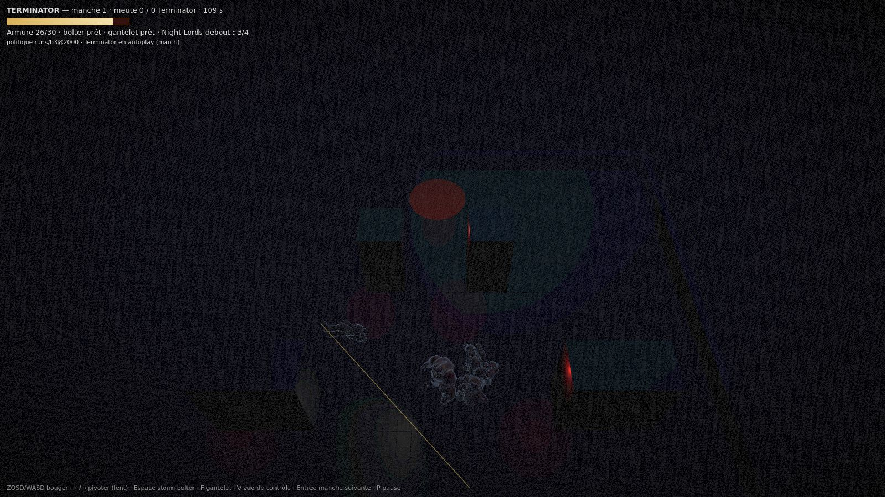
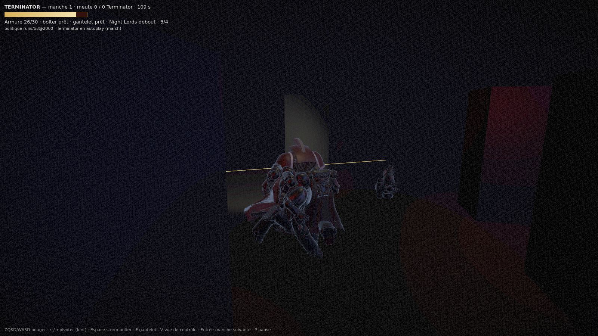

| avant — 22 m | après — 8,2 m |
|---|---|
 t77 — les quatre Night Lords sont à 17–20 m : 97–110 px de haut (contre 55 px à 22 m). |
 t77 — le Terminator occupe le tiers bas, la meute arrive de face entre les piliers. |
 t104 — à 22 m le corps à corps est illisible : deux taches de 60 px. |
 t104 — à 5,6–6,3 m les Night Lords font 308–347 px. Caméra remontée à 4,9 m : l'œil tombait dans l'emprise d'un pilier. |
 t115 — la meute sur le Terminator, vue de loin. |
 t115 — 264–303 px, un Night Lord arrive par la droite. |